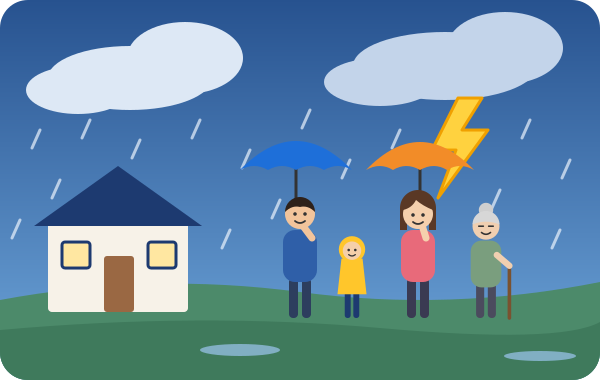
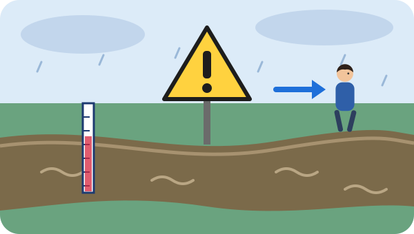
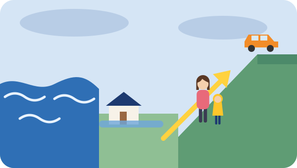
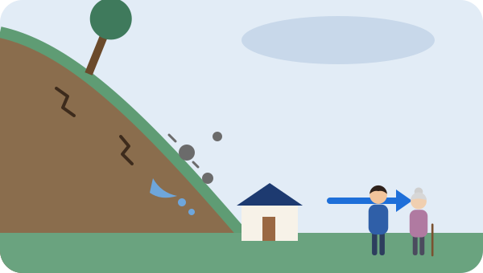
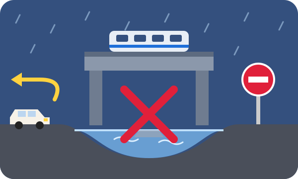
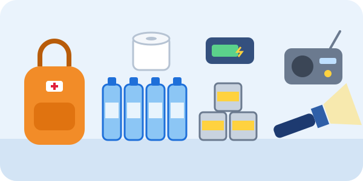
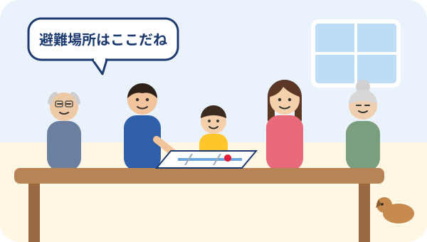

組合員とご家族のための防災ページ大和冷機労働組合
その雨、
大丈夫ですか？
ゲリラ雷雨・豪雨・台風から
自分と家族の命を守るために
危険になってからでは遅い。
知って、備えて、早めに行動しよう。

まず知ってほしいこと
大雨のとき、
“いつも大丈夫だから”は
通用しません
短時間で道路が冠水する
小さな川でも急激に増水する
下水があふれ、住宅街でも浸水する
山や崖から突然土砂が流れてくる
アンダーパスが短時間で冠水する
車が水没し脱出できなくなる
停電や断水が起こる
電車などが止まり帰宅できなくなる
雨が強くなってからではなく、
雨が強くなる前の行動が大切です。
自宅周辺の危険をチェック
あなたの家の周りは
大丈夫？
当てはまるものにチェックしてみましょう。
ひとつでも当てはまる人は、
自治体のハザードマップを確認しましょう。
国土交通省「ハザードマップポータルサイト」が開きます。「わがまちハザードマップ」から、お住まいの市区町村のハザードマップを探せます。自治体のホームページでも確認できます。
河川の近くに住んでいる人
川の様子を
見に行かない

- 大雨のときは川に近づかない
- 水位を自分の目で確認しに行かない
- 上流の大雨で、急に水位が上がることがある（自分のいる場所で雨が降っていなくても）
- 避難情報が出る前でも、危険を感じたら避難する
- 夜に大雨が予想されるときは、明るいうちの避難を考える
- 避難するときは川沿いの道路を使わない
川を見に行かない。
早めに川から離れる。
海岸・低い土地に住んでいる人
海や低い土地では
浸水・高潮にも注意

- 台風が近づいたら海岸に近づかない
- 高潮のおそれがあるときは海岸から離れる
- 低い土地では道路の冠水や床上浸水に注意
- 地下室・地下駐車場・地下街へ行かない
- 大切な物や家電は、できれば高い場所へ移動
- 車は早めに安全な高い場所へ移動する
危険が迫ってから、車を移動させない
雨や風が強くなってから車を動かしに外へ出るのは危険です。車の移動は「まだ大丈夫」なうちに済ませましょう。
崖・山の近くに住んでいる人
土砂災害は
突然起こります

こんな異変は危険のサイン
- 1崖から小石が落ちてくる
- 2斜面から水が湧き出す
- 3地面や崖にひび割れができる
- 4木が傾く
- 5地鳴りのような音がする
- 6川の水が急に濁る
前兆がなく発生することもあります。
サインがないから安全、ではありません。自宅が「土砂災害警戒区域」に入っている場合は、ハザードマップで確認し、早めに安全な場所へ避難しましょう。
異変を確認しに行かない。
危険を感じたら斜面から離れる。
豪雨のときの車の運転
豪雨のとき、
冠水道路には
絶対に入らない

アンダーパス・高架下・
低い道路は特に危険
- 冠水している道路には進入しない
- 水の深さを見た目だけで判断しない
- 前の車が通れたからといって、自分も通れるとは限らない
- アンダーパスには入らず、迂回する
- 川沿い・海岸沿いの道路を避ける
- 豪雨で前が見えにくいときは、無理に走らない
- 危険を感じたら、安全な場所に停車する
「行けるかな？」
と思ったら、
行かない。
水没時の脱出
もし車が水に
浸かってしまったら
窓が開くうちに、
早く脱出することが最優先。
-
STEP1
すぐに脱出を考える
シートベルトを外す。
-
STEP2
窓が開くうちに窓を開ける
窓が開けば、窓から脱出する。
-
STEP3
窓やドアが開かない場合
緊急脱出用ハンマーで窓（サイドガラス）を割る。
-
STEP4
脱出したら車から離れる
安全な高い場所へ移動する。
水圧でドアが開かなくなることがあります
車の外の水位が高くなると、水の圧力でドアはとても重くなります。また、電気系統が水に浸かるとパワーウィンドウが動かなくなるおそれがあります。
車内に水が入り、車の内と外の水位の差が小さくなるとドアが開けやすくなる場合もありますが、それを待つのではなく、窓が開く段階で早く脱出することが最優先です。
車内に緊急脱出用ハンマーを備えておこう
運転席から手が届く場所に置いておきましょう。シートベルトカッター付きのものもあります。
ご注意：フロントガラスや、車種によってはサイドガラスにも「合わせガラス」など、脱出用ハンマーで割れにくいガラスが使われています。自分の車のガラスの種類や、取扱説明書の脱出方法を事前に確認しておきましょう。
自宅の浸水対策
大雨になる前に
できること
- 側溝や排水口を掃除する
- ベランダの排水口を確認する
- 家電や貴重品を高い位置へ移動する
- 重要書類を防水袋に入れる
- スマートフォンを充電する
- モバイルバッテリーを充電する
- 浴槽などに生活用水をためる
- 停電に備えてライトを準備する
- 非常食と飲料水を確認する
- 必要に応じて止水板や土のう等を準備する
大雨が始まってから、外で作業しない
雨が強くなってからの土のう積みや、側溝・排水口の掃除などの屋外作業は危険です。準備は雨が降る前に済ませましょう。
雷への対策
ゲリラ雷雨では
雷にも注意
雷鳴が聞こえたら屋外での活動を中止
木の下で雨宿りしない
グラウンドなど開けた場所から離れる
建物や車の中へ避難する
川・海・プールなど水辺から離れる
まだ遠いと思わず、
雷の音が聞こえたら安全な場所へ。
停電・断水への備え
大雨のあとまで
考えて備えよう

- 飲料水
- 非常食
- 懐中電灯
- モバイルバッテリー
- 携帯ラジオ
- 常備薬
- 簡易トイレ
- タオル
- 着替え
- 現金（小銭も）
- 衛生用品
- 乳幼児用品
- 高齢者用品
- ペット用品
必要な物は家庭ごとに違います。家族の人数や年齢、持病、ペットの有無などに合わせて準備しましょう。
家族で決めておこう
離れているときに
災害が起きたら？

家族で確認すること
※チェックの状態は、この端末のブラウザにだけ保存されます。
災害時は電話がつながりにくくなることもあります。
平常時に家族で決めておきましょう。
災害用伝言ダイヤル「171」や、各携帯電話会社の災害用伝言板の使い方も、家族で確認しておくと安心です。
最新の防災情報
雨が降り始めたら
最新情報を確認
雨量だけではなく、
“自分のいる場所の危険度”を見る。
確認する情報
- 気象庁の防災気象情報警報・注意報など
- 雨雲の動き1時間先までの雨の予想
- キキクル（危険度分布）土砂・浸水・洪水の危険度を地図で表示
- 土砂キキクル土砂災害の危険度
- 浸水キキクル短時間の強い雨による浸水の危険度
- 洪水キキクル中小河川の洪水の危険度
- 河川水位情報国土交通省「川の防災情報」
- 自治体の避難情報市区町村のHP・防災メール・防災アプリ・テレビのデータ放送など
- ハザードマップ国土交通省 ハザードマップポータルサイト
キキクルの色の見方
- 黒：災害切迫（警戒レベル5相当）
- 紫：危険（警戒レベル4相当）危険な場所から全員避難
- 赤：警戒（警戒レベル3相当）高齢者等は避難
- 黄：注意（警戒レベル2相当）
「黒」になるのを待たず、「紫」の段階までに避難を完了しましょう。
避難するとき
危険になる前に
避難する
- 暗くなる前
- 道路が冠水する前
- 川が増水する前
- 風が強くなる前
- 土砂災害の危険が高まる前
避難に時間がかかる人がいるご家庭は、特に早めに
高齢の方、乳幼児、障がいのある方などがいる家庭では、「警戒レベル3 高齢者等避難」が出た段階で避難を始めましょう。
警戒レベルと、とるべき行動
※気象庁の防災気象情報は、2026年5月から「レベル4 ○○危険警報」の新設など、警戒レベルの数字が付いた名称に変わりました。詳しくは気象庁「新たな防災気象情報について」をご確認ください。自治体の避難情報は、気象庁の情報などをもとに市区町村が発令します。
避難先は避難所だけではありません
安全な場所に住む親戚・知人の家、ホテルなども避難先になります。ハザードマップで自宅が安全と確認でき、浸水しない高さにいられる場合などは、自宅の上の階にとどまる（屋内安全確保）ことも選択肢です。ただし、土砂災害の危険がある場所や、浸水が長く続くおそれのある場所などでは、自宅外へ避難しましょう。
避難情報が出てから準備するのではなく、
避難情報が出る前から準備しておく。
命を守るための5つの約束
- 1川・海・崖を見に行かない
- 2冠水した道路に入らない
- 3アンダーパスに入らない
- 4最新の防災情報を確認する
- 5危険になる前に避難する
大切なのは、
“自分だけは大丈夫”と
思わないこと。
自分と、大切な家族の命を守るために。
今日からできる備えを始めましょう。
組合からのメッセージ
組合員の皆さんとご家族が、いつも安全に暮らせることが私たちの願いです。
災害はいつ、どこで起こるかわかりません。
大雨や台風が近づいてから慌てるのではなく、普段から自宅周辺の危険な場所や避難先について、ご家族と一緒に確認しておきましょう。
自分と、大切な人の命を守るために。
早めの準備と早めの行動をお願いします。
大和冷機労働組合